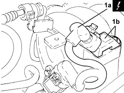

1056B44 AIR PRESSURE SENSOR - R + R
- Path
- Procedures > 10 ENGINE > 1056 PETROL INJECTION SYSTEM > 1056B MULTI-POINT INJECTION SYSTEM (MPI) > 1056B44 AIR PRESSURE SENSOR - R + R
- Kind
- repair procedure (removal / refitting; the operation number is the code)
- Applies to
- engines: 1.4 8v; all production periods
- Interactive page
- https://sloeber94.github.io/elrnDB-fDbl/en/#/223000129
Applies to: engines: 1.4 8v; all production periods
 Removing
Removing
 Refitting
Refitting- Disconnect the negative battery terminal.
Op. 1048A10 AIR FILTER ASSEMBLY - R.R.
1. Disconnect the electrical connection (1a), unscrew the bolt and remove the absolute pressure sensor (1b).
Description | Connector | |
|---|---|---|
1a | Absolute pressure sensor |

Applies to: engines: 1.4 8v; all production periods
Refitting
Removing- Refit the absolute pressure sensor in its seat, secure with the bolt and connect the electrical connection.
Op. 1048A10 AIR FILTER ASSEMBLY - R.R.
- Connect the negative battery terminal.